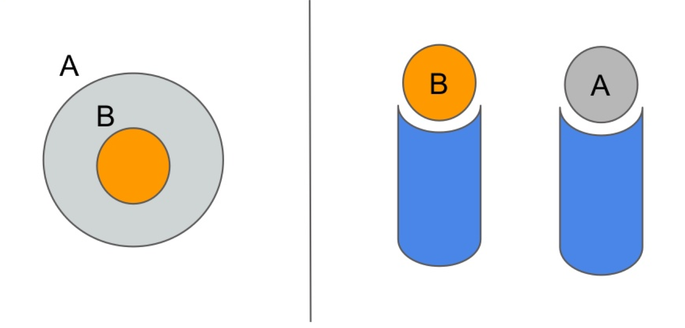
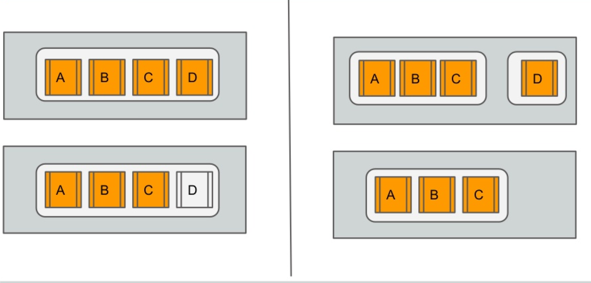
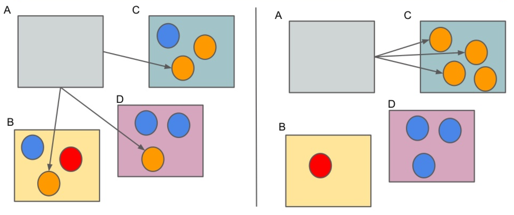
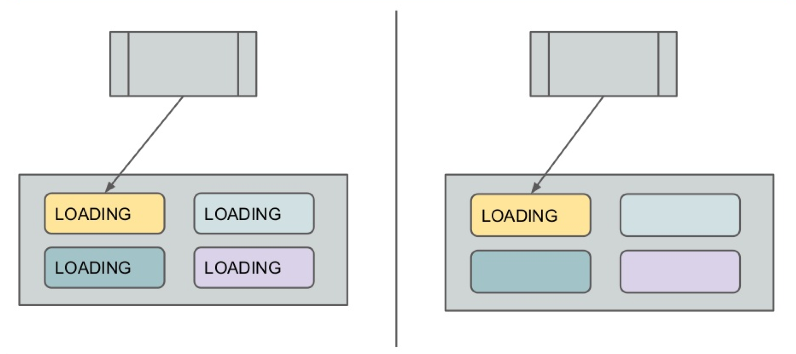
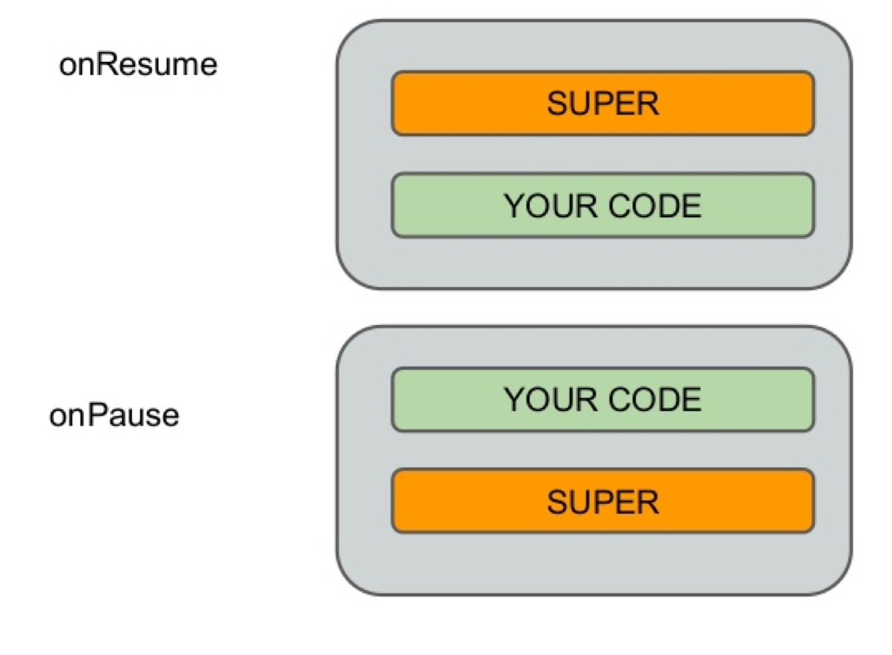

- Consider Single Responsibility
- Every code block such as classes, methods should have only one responsibility
- Every piece of code should work as unit and units should have only one work
- Fragment should be a layout and it should not contain network calls. You may want to use the same layout for something else and it may require a different call. Solution is use the interface and let the activity handle and decide on what to do
- Every activity should be responsible of only one thing. For example: Login should be in one activity, main screen should be in another. (Of course depends on the design)
- Adapters should not make the network call when you click, instead activity should be responsible
- Use interfaces for interaction between components (activity/fragment/adapter)
- http://en.wikipedia.org/wiki/Single_responsibility_principle
- http://java.dzone.com/articles/single-responsibility
- Consider Open/Closed Principle
- Make adapters reusable
- Make your request classes reusable
- Make fragments reusable
- http://en.wikipedia.org/wiki/Open/closed_principle
- http://www.oodesign.com/open-close-principle.html
- Consider Liskov's Substitution
- Do not change the base class methods' behavior
- Always make super call in fragments/activities
- http://en.wikipedia.org/wiki/Liskov_substitution_principle
- http://www.oodesign.com/liskov-s-substitution-principle.html
- Consider Interface Seggregation
- Create specific interfaces for each feature
- Split
- http://en.wikipedia.org/wiki/Interface_segregation_principle
- http://www.oodesign.com/interface-segregation-principle.html
- Consider Dependency Inversion
- High-level modules should not depend on low-level modules. Both should depend on abstractions.
- Abstractions should not depend on details. Details should depend on abstractions.
- To communicate between activity and fragment, create an interface and use it
- To communicate between adapters and fragment/activity, use interface
- Always use abstraction as reference in your code
- http://en.wikipedia.org/wiki/Dependency_inversion_principle
- http://www.oodesign.com/dependency-inversion-principle.html
- Aim for High Cohesion
- Increased readability
- Increased maintainability
- Reduced complexity
- Do not create a different constant class for the bundle/sharedpreferences keys. Instead put it to related class. Use static factory method.
- http://en.wikipedia.org/wiki/Cohesion_%28computer_science%29
- http://java.dzone.com/articles/coupling-and-cohesion-failed
- Aim for Loosely Coupling, Orthogonality
- Use EventBus to communicate from activity to fragment. Thus you don't have to rely specific fragment
- Use EventBus to deliver network responses
- http://en.wikipedia.org/wiki/Loose_coupling
- http://java.dzone.com/articles/coupling-and-cohesion-failed
- Use static nested over inner class
- It incrases the time & space complexity
- Might causes the memory leaks because the inner class always need enclosing class as well
- If you access an element of enclosing class, you can't use static, you need to use inner class
- If not, always use static nested
- Use static class for the view holder in the adapter
- http://programmers.stackexchange.com/questions/238782/why-prefer-non-static-inner-classes-over-static-ones
- http://stackoverflow.com/questions/1353309/java-static-vs-non-static-inner-class
- Use enhanced loop (foreach)
- Increased readability
- Less error-prone such as mis-use of index
- Enhanced loop throws NPE if the list is null
- Not good for concurrency
- Use for loop if you need the count index
- Use traditional for loop for arraylist for performance-critic. Traditional for loop is 3x faster than enhanced loop for ArrayList. Because in ArrayList, accessing an element is constant O(1)
- Use lazy load
- Instantiate the json parser when needed
- Instantiate the network adapter when needed
- Instantiate fragments when they are called in the viewpager
- http://en.wikipedia.org/wiki/Lazy_initialization
- http://www.javaworld.com/article/2077568/learn-java/java-tip-67--lazy-instantiation.html
- Use final where applicable
- final declared fields cannot be reassigned
- final declared methos cannot be overriden
- final declared classes cannot be inherinted
- When declaring methods and classes, you should ask yourself why to use final. Because methods and classes should be open to extend/override. Remember open/closed principle unless you really don't want any change on them such as utility classes or critical methods.
- When declaring fields, you should ask yourself why not use final keyword?
- Use final for the fields in the adapter
- Use final for utility classes
- http://stackoverflow.com/questions/137868/using-final-modifier-whenever-applicable-in-java
- http://www.javaperformancetuning.com/tips/final.shtml
- Lower the scope
- The more lower the less data expose. And also when it is finished, it will disposed.
- Increased readabiliy
- Try to localize as much as possible
- Do not make everything global in the activity/fragment/adapter for views
- Use local as much as possible. Android studio warns you about this
- Lower the modifier
- Lower the modifier and don't expose the data
- Increased readabiliy
- Try to localize as much as possible
- Always start with private
- Make everything private as much as possible.
- In adapters, everything can be private
- In activity/fragment everything can be private
- Do not use magic strings/numbers
- Less error-prone
- Increased readabiliy
- Always use constants to explain your magic string/numbers
- empty string is not magic
- 0 is not magic if you use it to check size
- Consider law of demeter
- Each unit should have only limited knowledge about other units: only units "closely" related to the current unit.
- Each unit should only talk to its friends; don't talk to strangers.
- Only talk to your immediate friends
- Communication between components should be with interfaces.
- Do not cross max line width
- Increases the readability
- It will also force you to make clean/simple code
- For android I use 120 as default. I think it is better
- Use group formatting when the line is long
- Remember to localize if you want to shorten the line. Don't be afraid of that
- Use switch where possible
- Less error-prone
- Increased readability
- With java 7, String can be used in the switch cases
- You can use switch in onClick(), I prefer ButterKnife to split methods, more readable with that way
- Use enums/constants to make readable cases
- Use "fall through" approach. When the case is the same with the next one, you can put a comment and tell that it will fall through. This will help the next developer to understand that this is done intentinally.
- Use default all the time
- Use executer service
- Less error-prone
- Take advantage of thread pool
- For drawing you can create a thread and let the executer service handle it
- Do not log sensitive information
- More secure application
- Less exposed data
- Logs can be retrieved if they are not removed
- Use proguard to remove logs
- Do not log passwords
- Do not log usernames
- Do not log credit card information
- Do not log 3rd party data
- Do not log device information
- Use constants correctly
- Only immutable objects and primivites can be constant
- Use static final for constants. Without final, the compiler generates an initializer method which is called \
- static final doesn't mean it is constants, make sure that the object is immutable
- https://google-styleguide.googlecode.com/svn/trunk/javaguide.html#s5.2.4-constant-names
- http://developer.android.com/training/articles/perf-tips.html#PreferStatic
- Use static factory method
- You can have meaningful constructors
- The class itself has the object creation responsibility
- You can control the instance such as singleton
- You can return subclass instead of the base type
- Activity class should create intent
- Fragment class should create fragment
- Consider dependency injection
- Increased reusability
- Increased readability
- Easier for unit testing
- Pass the objects to fragments/adapters, thus they can be reusable
- Use appropriate names
- Increased readability
- Less error-prone
- Follow the google java naming conventions
- If the project has a standart, always follow that
- Be aware of substring issue
- Potential memory leak
- Use new String() for java < 7
- Use TextUtils
- Null condition check
- TextUtils.join
- TextUtils.isEmpty
- TextUtils.equals
- Return Empty Collection
- No need to check null conditions in client side
- Good for enhanced loop
- If it is null, return Collections.EMPTY_MAP/LIST/SET
- Use Collections utility class. You can use singleton EMPTY_LIST, EMPTY_MAP and EMPTY_SET
- Do not reinvent the wheel
- Use the latest algorithms for sorting/encyption
- More stable, more tested, more accurate
- Use Collections.sort
- Use security class for encryption
- Check android developer references API and Java API
- Use dp, sp
- px is one pixel
- sp is scale-independent pixels
- dp(dip) is Density-independent pixels.
- Use sp for font sizes. User can use bigger fonts by selecting in the device
- Use dp for everything else
- Consider Reversibility
- Your code should be easily revert
- Make one entry point
- Use injection approach
- Avoid programming by coincidence
- Don’t guess, prove it
- Explain it very simply
- Shorten edit/compile/test cycle
- Unit test and refactor
- Be aware of Premature Optimization
- Focus on the main thing
- Compiler is already making a lot of optimizations, check it
- Use + operator for string concat unless it is a loop, then use StringBuilder. Compiler convert it to StringBuilder already
- Do not repeat yourself
- Always check duplicated code and encapsulate them and reuse
- Increased readability, reusability
- Use checkstyle to determine your duplication
- Use Enums
- Increased readability
- Less error-prone
- Enum is a class, so treat it like a class.
- Don't use static for enum, it is and will be already static by compiler
- Every field is static final, so treat them like a constant
- Use builder pattern
- Get rid of many constructors
- Get immutable object
- Add some controls for the fields
- Use builder to create response objects
- Use builder to create adapters
- Composition over inheritance
- Increased reusability
- Use CharSequence
- Depend on abstractions
- Increased reusability
- Views usually returns CharSequence
- Depends on abstraction, so you can use CharSequence
- Constructive first, destructive last
- put the code before super() in onPause, onStop, onDestroy, on DestroyView
- Add comments when necessary
- Increased readability
- Less error-prone
- If the comment is too much, something is wrong, fix it
- If you write formulas, add some explanation
- Use javadoc /** like that
- Explain the situation from the 3rd person view
- Consider immutability
- Do not blindly use getter/setter for everything
- Consider builder pattern/defensive copy etc
- Immutability is thread-safe
- Consider defensive copy
- Increased immutability
- Less mutation for the object, less error-prone
- Use copy constructor to copy objects
- Be aware of SparseArray
- No autoboxing
- Not suitable for huge data
- Less space complexity
- Time complexity is log(n)
- If the key is integer, use SparseArray
- If the data is very huge, do not use it. Because access time complexity is log(N)
- Fail-fast
- Increased readability
- Use proguard
- Obfuscates
- Decreases the size
- Remove the logs
- Slightly optimize
- Use zipalign on your final APK
- Optimizate the apk
- Minimize execution times
- Less memory consumption in runtime
- Google Play Store does not accept APK files that are not zipaligned.
- Be aware of internal getter/setters performance
- Within a class, accessing a field via getter is 3x slower than accessing it directly. For performance reason you should access to fields directly within the class.
- Without JIT, accessing a direct field is 3x faster than invoking a getter method.
- With JIT, accessing a field directly is same as like accessing a local, accessing a direct field is 7x faster than getter
- Use public interface to access fields outside of the class, such as getter.
- Use proguard which can inline accessors for you
- Use floating-point type carefully
- floating-point is 2x slower than integer
- Use more careful for division, division is handled by software, thus when you use it in performance-critic places, consider that.
- floating-point type has rounding error
- Use BigDecimal for money calculation
- float and double are the same in the speed terms, double is 2x larger, prefer double instead of float.
- http://developer.android.com/training/articles/perf-tips.html#AvoidFloat
- http://docs.oracle.com/cd/E19957-01/806-3568/ncg_goldberg.html
- Be aware of invisible performance hit when using inner class
- You can use package-private modifier, but prefer to private if you don't want to expose your field to outside
- Nested Fragments
- Avoid to use nested fragments. Really too much trouble.
- Deep dive into for loop
- 1 is slow, because JIT can't yet optimize away the cost of getting the array length once for each iteration.
- 2 is fast, you get the size once and avoid the first issue.
- Use enhanced loop (check enhanced loop item)
- Aim readability.
- Fastest for loop, according to link. I haven't tested. I wouldn't use this unless you really really need performance
for (int i = initializer; i >= 0; i--) { ... } - http://developer.android.com/training/articles/perf-tips.html#Loops
- http://www.androidsnippets.com/how-to-write-faster-loops
- Be careful with bitmaps
- Keep the bitmap in memory only with the resolution you need.
- On Android 2.2 (API 8) and lower, when GC occurs, app's thread get stopped, it causes lag
- On Android 2.3, GC works concurrently, memory is reclaimed after bitmap is no longer needed
- API 10 and lower, pixel data is stored in native, separated from the bitmap itself.You need to call recycle() in order to release the memory.
- On android 3.0, pixel data is stored in dalvik heap, no need to call recycle(). GC will handle it
- Use cache to store bitmaps, such LRUCache, LRUDiscCache.
- Use Picasso to get images from networks.
- For bitmap operations, use background worker
- Scale the bitmap regarding to your screen size
Tips:
Read list
A class should be closed to modification but open to extend.
You should not modify the class for each request. The class itself should be flexible and extendable.
Tips:
Read list
Derived types must be completely substitutable for their base types.
Tips:
Read list
Clients should not be forced to depend upon interfaces that they don't use.
Tips:
Read list
Android:
Read list
All related elements should be together. Advantages of high cohesion:
Tips:
Read list
Each component should have less depend on other components
Tips:
Read list
Inner class is an element of the class, because of that
Static nested class is considered as a different class just happened to be inside a class.
When to use static and inner then?
Tips:
class Adapter{
static class Holder{
TextView text;
}
}
Read list
Tips:
Read list
Do not load everything if the data is depended on situations. Do not initialize everything at the beginning in the classes.
Tips:
Read list
Why and where to use final declarations?
Tips:
Read list
Advantages are:
Tips:
Read list
Same rule applies as lower the scope
Tips:
Read list
Our aim should be more readability, in order to achive that we need to make everything clear for ourselves
Tips:
Read list
Tips:
Read list
Tips:
Read list
Tips:
switch (color) {
case BLUE:
//fall through
case RED:
doSomething();
break;
}
Read list
Let the service handle taking care of threads.
Tips:
Read list
Tips:
Read list
Tips:
static final String KEY_NAME = "key_name"; // constant static final MyAdapter adapter = new Adapter(); // not constant static String key_name = "key_name"; // not constant
Read list
Tips:
public class MyActivity extends Activity{
private static final String KEY_NAME = "key_name";
public static Intent newIntent(Context context, String name){
Intent intent = new Intent(context, MyActivity.class);
intent.putString(KEY_NAME, name);
return intent;
}
}
public class MyFragment extends Fragment{
private static final String KEY_NAME = "key_name";
public static Fragment newInstance(String name){
Bundle bundle = new Bundle();
bundle.putString(KEY_NAME, name);
Fragment fragment = new MyFragment();
fragment.setArgs(bundle);
return fragment;
}
}
Read list
An injection is the passing of a dependency (a service) to a dependent object (a client). The service is made part of the client's state.

Tips:
public class MyAdapter extends BaseAdapter{
private final List list;
public MyAdapter(Context context, List list){
this.list = list;
}
}
Read list
Tips:
Read list
Before java 7, substring operation creates a reference to main String and it might create memory leak if the string was too big such as buffer
Tips:
Read list
Tips:
Read list
Tips:
ListgetList(){ if (list == null){ return Collections. emptyList(); } return list; }
Read list
Tips:
Read list
Tips:
Read list
Tips:
Read list
Read list
We should forget about small efficiencies, say about 97% of the time: premature optimization is the root of all evil.
Tips:
Read list
Tips:
Read list

Tips:
Read list
Tips:
Read list
Instead of extending a class, put the class object as a field and use it
Read list
Tips:
Read list
Make sure that your code is between constructive and descructive
Tips:
void onDestroy(){
ButterKnife.reset(this);
myBitmap = null;
// etc
super.onDestroy();
}
Read list
Tips:
Read list
Read list
Tips:
Read list
Tips:
Read list
If you want to check some condition, check it first then continue on the flow
Examples
public void doSomething(Context context){
if (context == null){
throw new NullPointerException("blaba");
}
//continue
}
Read list
Read list
Read list
Tips:
Read list
Tips:
Read list
When you access a private field of the enclosing class from the inner class, this is legal in compiler but illegal for VM. Compiler creates synthetic methods to solve this issue.
Tips:
Read list
If you use a fragment inside a fragment, remember to use child fragment manager for the nested fragment.
Tips:
Read list
String[] list = ...
//1
for (int i=0; i<list.length; i++) {
//do something
}
//2
int len = list.length;
for (int i=0; i<len; i++) {
//do something
}
Tips:
Read list
Tips:
Read list